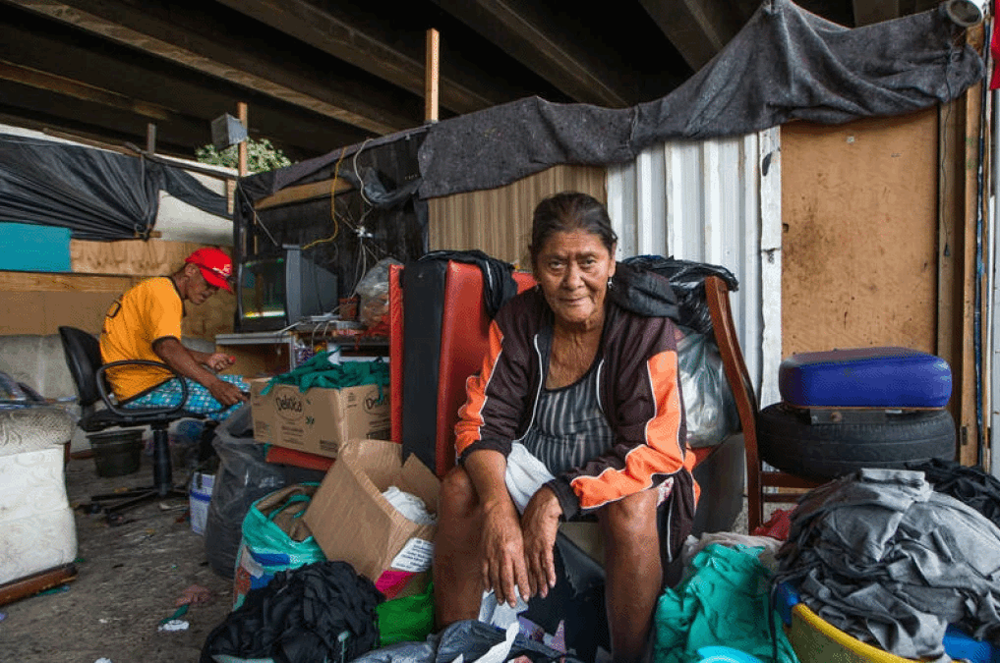

O QUE É
POBREZA
MENSTRUAL?
A pobreza menstrual se define pela falta de recursos básicos (absorventes ou coletores menstruais, sabonetes, água, papel higiênico, entre outras coisas), infraestrutura adequada (banheiros seguros e bem conservados, saneamento básico, coleta de lixo) e conhecimento (quebra de tabus e preconceitos sobre o tema) para que pessoas que menstruam tenham plena capacidade de cuidar de sua menstruação.
Assim, as causas da pobreza menstrual giram, principalmente, em torno da desigualdade social, uma vez que as pessoas mais atingidas por esse problema são as que não têm recursos para a compra os itens de higiene ou não têm acesso a informações sobre o tema.
A POBREZA
MENSTRUAL
NAS ESCOLAS
Diante do pouco dinheiro para produtos básicos de sobrevivência, são adolescentes o alvo mais vulnerável à precariedade menstrual. Sofrem com dois fatores: o desconhecimento da importância da higiene menstrual para sua saúde e a dependência dos pais ou familiares para a compra do absorvente, que acaba entrando na lista de artigos supérfluos da casa.
Por falta de absorvente, uma a cada 5 jovens falta à escola, diz estudo. Ao menos 20% de jovens de 14 a 24 anos que menstruam já deixaram de ir à escola por não terem absorvente.
Dados da ONU apontam que, no mundo, uma em cada dez meninas falta às aulas durante o período menstrual. No Brasil, esse número é ainda maior: uma entre quatro estudantes já deixou de ir à escola por não ter absorventes.
Fonte: Agência Senado
DURA REALIDADE
DA POBREZA MENSTRUAL PARA MULHERES EM SITUAÇÃO DE RUA
Sem acesso a banheiro, água, itens de higiene pessoal e absorventes, as mulheres em condição de rua fazem parte da parcela da população que mais tem a saúde e a dignidade ameaçadas.
relatos reais para sentir na pele esta dura realidade.
"Durante esse período, eu já precisei me esconder, donos de estabelecimentos simplesmente não deixam “a gente” entrar para se limpar ou pegar um pouco de papel".
"Eu peguei no lixo, um saco daqueles de pão, pra tentar diminuir o sangue".
"A gente gosta de estar sempre limpa, principalmente nessa época, né? As pessoas acham que somos bichos por morar na rua, mas a gente só tá aqui vivendo, sem fazer mal pra ninguém. Também merecemos dignidade".
“Uma vez tive que usar a fralda da minha filha”.
“Já usei jornal, já usei fralda, já usei paninho, papel higiénico, papel de ofício. Folha de caderno! Folha de caderno eu usei bastante!”

Além de todas as dificuldades de quem não tem onde morar, as mulheres em situação de rua têm de lidar com as exigências do período menstrual sem dinheiro, água, privacidade ou atendimento médico apropriados.
DADOS E ESTATISTICAS
SOBRE A POBREZA MENSTRUAL
No Brasil, 713 mil meninas vivem sem acesso a banheiro ou chuveiro em seu domicílio e mais de 4 milhões não têm acesso a itens mínimos de cuidados menstruais nas escolas.
Em enquete realizada pelo UNICEF em 2021 com 1,7 mil crianças e adolescentes que menstruam, 62% afirmaram que já deixaram de ir à escola ou a algum outro lugar de que gostam por causa da menstruação, e 73% sentiram constrangimento nesses ambientes.
Um levantamento feito pelo Instituto de pesquisa Locomotiva, en conjunto com a marca de absorventes Always, aponta que 52% das mulheres no Brasil já sofreram com a pobreza menstrual e 35% afirmam que compra itens de higiene pessoal pesa na renda.
A pobreza menstrual afeta, no Brasil, 28% das pessoas de baixa renda na faixa etária entre os 14 e os 45 anos, o equivalente a uma população de 11,3 milhões de habitantes. Uma parcela de 40% dessas mulheres se encontra na faixa etária entre os 14 e os 24 anos. Ressalta-se ainda que a maior parte delas não têm conhecimento de estarem vivendo uma realidade de pobreza menstrual.
DOENÇAS
QUE PODEM SURGIR
A falta de acesso a itens básicos de higiene íntima faz com que materiais inadequados sejam usados como substitutos. Segundo a pesquisa da indústria de absorventes, 50% das entrevistas já precisou substituir os absorventes por papel higiênico, roupas velhas ou toalha de papel, o que não é seguro para a saúde, podendo ocasionar infecções no trato urinário, nos rins, lesões nos órgãos reprodutores femininos e, a longo prazo, infertilidade, além de ferir a dignidade.
A ginecologista Maria Auxiliadora, que também é mestre em Ginecologia pela Universidade Federal de São Paulo (UNIFESP), relata já ter atendido uma adolescente de 14 anos que apresentava uma miíase – infecção causada pela presença de larvas de moscas – na vulva, que é a parte externa da vagina. A causa foi o uso de papelão descartado, recolhido de lixeiras, como “absorvente”. Infelizmente, casos como esse não são exceções. A pesquisa Dignidade Menstrual em Números, promovida pela marca Sempre Livre em 2021, registrou que, de 814 brasileiras entrevistadas, 28% já tiveram infecção urinária ou cistite; 24%, candidíase; 11%, infecção vaginal por fungo e 7%, por bactéria.